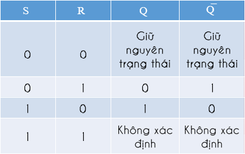
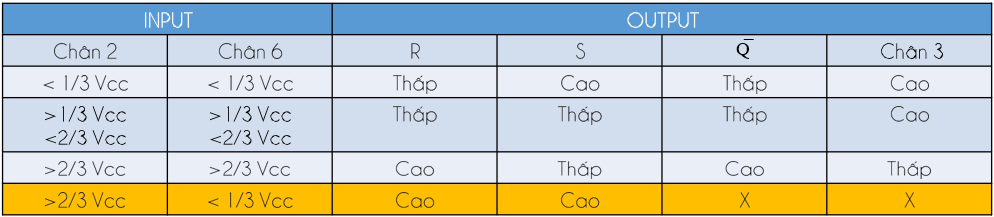
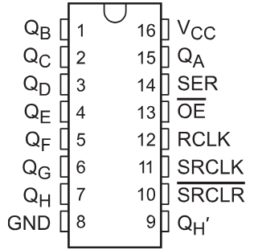
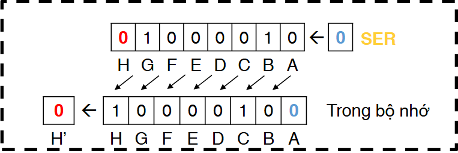
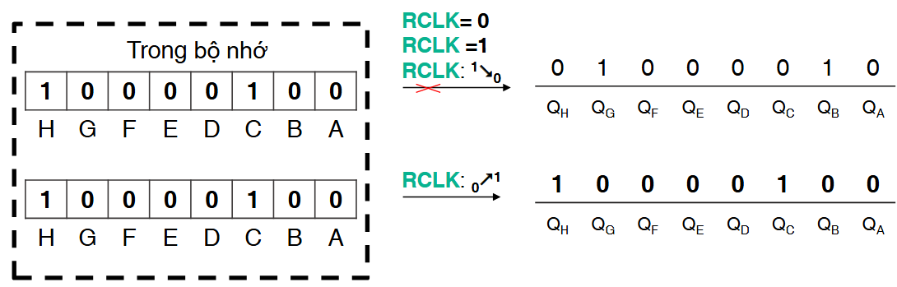

Nguyên lý hoạt động
Mạch LED trái tim thường được thiết kế để tạo ra hiệu ứng nhấp nháy hoặc "chạy" LED theo các mẫu nhất định. Mạch này sử dụng một số linh kiện cơ bản như: IC tạo xung NE555, IC ghi dịch 74HC595, LED, điện trở, tụ điện,... Mạch được tạo thành từ hai phần chính: mạch tạo xung và mạch điều khiển LED.
Mạch tạo xung
Mạch này có nhiệm vụ tạo ra các xung clock liên tục để điều khiển quá trình ghi dịch dữ liệu trong mạch bằng việc cấu hình NE555 ở chế độ astable. Tần số của các xung này phụ thuộc vào các điện trở và tụ điện được cấu hình cho NE555.
Giới thiệu về IC NE555 — một IC quen thuộc, thường dùng để tạo xung clock. Dưới đây là chức năng của từng chân:
1 (GND) và 8 (VCC): dùng để cấp nguồn cho IC.
2 (Trigger): chân ngõ vào so áp với áp chuẩn là \(1/3 VCC\)
3 (Output): chân ngõ ra tín hiệu.
4 (Reset): reset trạng thái ngõ ra, để IC có thể tạo xung, cần nối chân này với VCC.
5 (Control Voltage): chân này dùng để điều chỉnh độ rộng xung, chân này có thể không kết nối.
6 (Threshold): chân ngõ vào so áp với áp chuẩn là \(2/3 VCC\).
7 (Discharge): chân này được nối với cực C của BJT bên trong IC, dùng để xả điện.
{kind=link}
Từ sơ đồ khối, ta cùng tìm hiểu chức năng từng khối bên trong NE555:
Khối so sánh: bao gồm hai OPAMP được cấu hình theo mạch so sánh (khoanh đỏ), OPAMP1 so sánh áp tại chân Trigger điện áp chuẩn \(\frac{1}{3} VCC\) và đưa ra mức logic cho ngõ vào S của chốt SR. Khi áp tại chân Trigger thấp hơn áp chuẩn \(\frac{1}{3} VCC\), ngõ ra sẽ ở mức cao, ngược lại, ngõ ra sẽ ở mức thấp. Mặt khác, OPAMP2 so sánh áp tại chân Threshold với áp chuẩn \(\frac{2}{3} VCC\) và đưa ra mức logic cho ngõ vào R của chốt SR. Khi áp tại chân Threshold cao hơn áp chuẩn \(\frac{2}{3} VCC\), ngõ ra sẽ ở mức cao, ngược lại, ngõ ra sẽ ở mức thấp.
{kind=link}
Khối phần tử nhớ: gồm chốt SR (khoanh đỏ) đóng vai trò lưu trữ trạng thái thông tin. Trạng thái của ngõ ra Q phụ thuộc vào trạng thái ngõ vào của chân S và R. Trạng thái của ngõ ra \(\overline{Q}\) là ngõ ra đảo của Q.
{kind=link}
Bảng chân trị của chốt SR:
{kind=link}
Khối cổng logic: thường nhà sản xuất sẽ nối chân OUTPUT với ngõ ra Q của chốt SR, tuy nhiên có vài trường hợp, ngõ ra \(\overline{Q}\) sẽ qua một cổng NOT và kết nối với chân OUTPUT. Nhiệm vụ của cổng NOT đơn giản là đảo trạng thái của ngõ vào và đưa ra ngõ ra.
Từ đó, ta có thể suy ra bảng chân trị cho NE555 như sau:
{kind=link}
Như vậy, từ sơ đồ khối, ta nhận thấy có thể dùng NE555 tạo xung clock bằng cách thay đổi điện áp trên chân Trigger và Threshold.
Mạch điều khiển LED
Mạch này có nhiệm vụ nhận dữ liệu từ mạch tạo xung và điều khiển LED sáng tương ứng. Mạch này sử dụng IC ghi dịch 74HC595 để ghi dữ liệu vào các LED. Mỗi bit của dữ liệu sẽ tương ứng với một LED. VD: 00000001 → LED 1 sáng, 00000010 → LED 2 sáng, ... Điều đặc biệt là mạch này có thể điều khiển nhiều LED cùng một lúc, giúp tạo ra các hiệu ứng nhấp nháy phức tạp. IC 74HC595 là một thanh ghi dịch 8 bit kèm theo một thanh ghi chốt (latch) giúp mở rộng số chân đầu ra của vi điều khiển. Nó thường được sử dụng để điều khiển nhiều LED, màn hình 7 đoạn, hoặc các thiết bị cần nhiều chân I/O.
{kind=link}
Cấu tạo chính của 74HC595:
16 (VCC) và 8 (GND): cấp nguồn cho IC.
14 (SER): chân dữ liệu đầu vào.
13 (OE): chân kích hoạt đầu ra.
12 (SRCLK): khi có cạnh lên vào chân này, dữ liệu tại SER được đưa vào thanh ghi.
11 (RCLK): khi có cạnh lên vào chân này, các dữ liệu trong thanh ghi sẽ đẩy ra các ngõ ra.
10 (\(\overline{SRCLR}\)): khi mức logic của chân này ở mức thấp, xóa dữ liệu trong thanh ghi.
9 (\(Q_H'\)): chân đầu ra của thanh ghi dịch.
1, 2, 3, 4, 5, 6, 7, 15: các chân ngõ ra \(Q_A \rightarrow Q_H\).
Nguyên lý hoạt đông của 74HC595 dựa trên cơ chế ghi và dịch dữ liệu trong thanh ghi. VD: Khi SER đang có mức logic 0, lúc này IC sẽ chờ cạnh lên của SRCLK để đưa bit 0 này vào thanh ghi. Lúc này thanh ghi sẽ dịch trái sang 1 bit.
{kind=link}
Khi cạnh lên của RCLK xuất hiện và mức logic ở chân \(\overline{OE} = 0\), dữ liệu trong thanh ghi sẽ được đẩy ra các ngõ ra \(Q_A \rightarrow Q_H\).
{kind=link}
Nguyên lý hoạt động của 74HC595 rất đơn giản nhưng cũng cần lưu ý một số điều như sau:
Chân \(\overline{OE}\): dùng để kích hoạt đầu ra, khi mức logic ở chân này ở mức cao, tất cả các ngõ ra sẽ ở mức logic 0.
Nếu RCLK và SRCLK có cạnh lên cùng lúc thì IC sẽ thực hiện RCLK trước rồi tới SRCLK.
Chân \(\overline{SRCLR}\): chân reset bất đồng bộ.
Khi nối các 74HC595 với nhau cần nối theo cấu trúc daisy-chain: chân \(Q_H'\) của IC trước sẽ nối với chân SER của IC sau và \(Q_A\) của IC sau bằng \(Q_H'\).